Desde 1979
¿Necesitas asesoramiento para tu proyecto?
Cuéntanos qué necesitas y nuestro equipo técnico te ayuda a elegir la solución más adecuada para tu finca.
Solicitar presupuesto Volver al inicio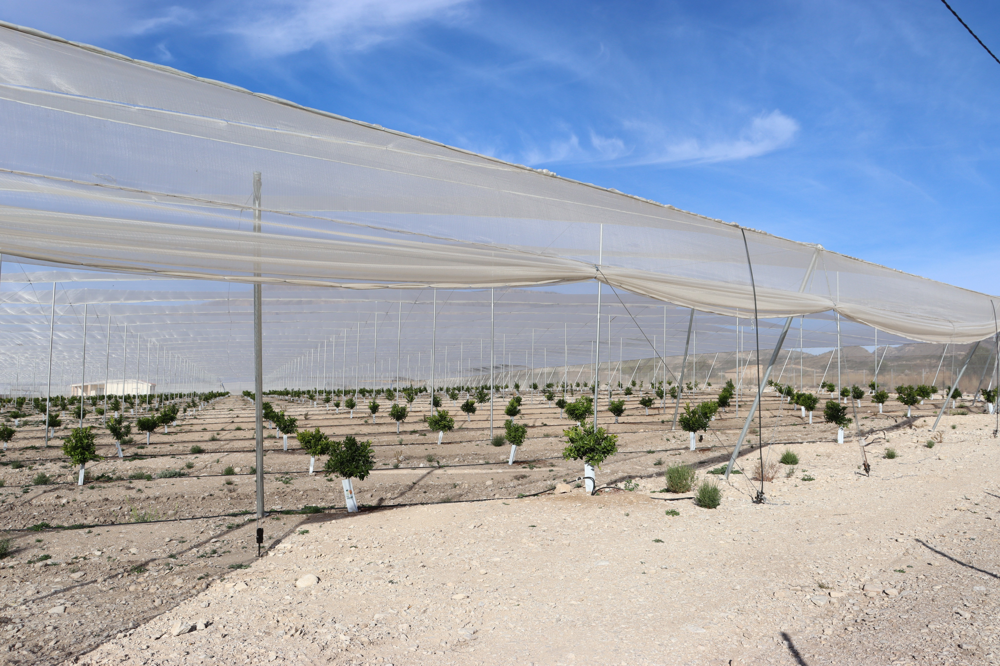
Proyectos llave e mano.
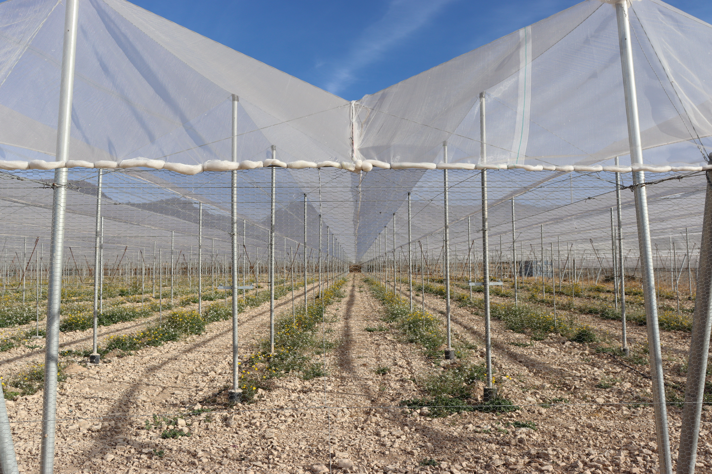
Diseñamos y construimos invernaderos adaptados a cada cultivo, terreno y clima. Nuestro equipo técnico te asesora en la elección de la estructura más adecuada para tu explotación, desde modelos multicapilla y parral hasta pequeños invernaderos de jardín.
Solicitar presupuestoTecho a dos aguas y estructura de cables de acero que minimiza la necesidad de pilares centrales, optimizando el espacio y facilitando el acceso de maquinaria agrícola. Ideal para cítricos, uva de mesa y kiwi.
Estructura flexible de alambres y trenzas tensados, con cerramiento de láminas de plástico entre mallas de alambre. Los soportes se fijan al suelo mediante cimentación en acero galvanizado.
Techo esencialmente plano o ligeramente inclinado que maximiza el aprovechamiento del espacio, especialmente indicado para cultivos en espaldera como la vid.
Diseño compacto y estético pensado para huertos y jardines domésticos, con techo inclinado a dos aguas para un buen drenaje y entrada de luz solar.
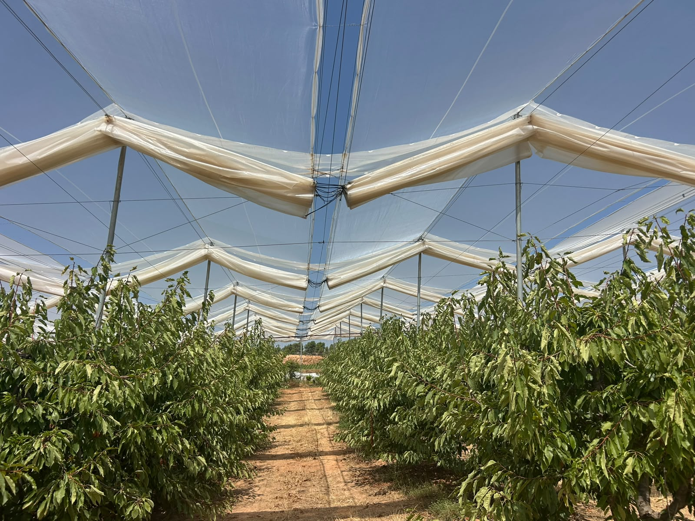
WALIA dota de inteligencia a tus invernaderos multiparral y multicapilla: sensores, motores y conexiones que abren y cierran los plásticos automáticamente e informan en tiempo real del clima en tu finca, con opción de placas solares para funcionar de forma autosostenible.
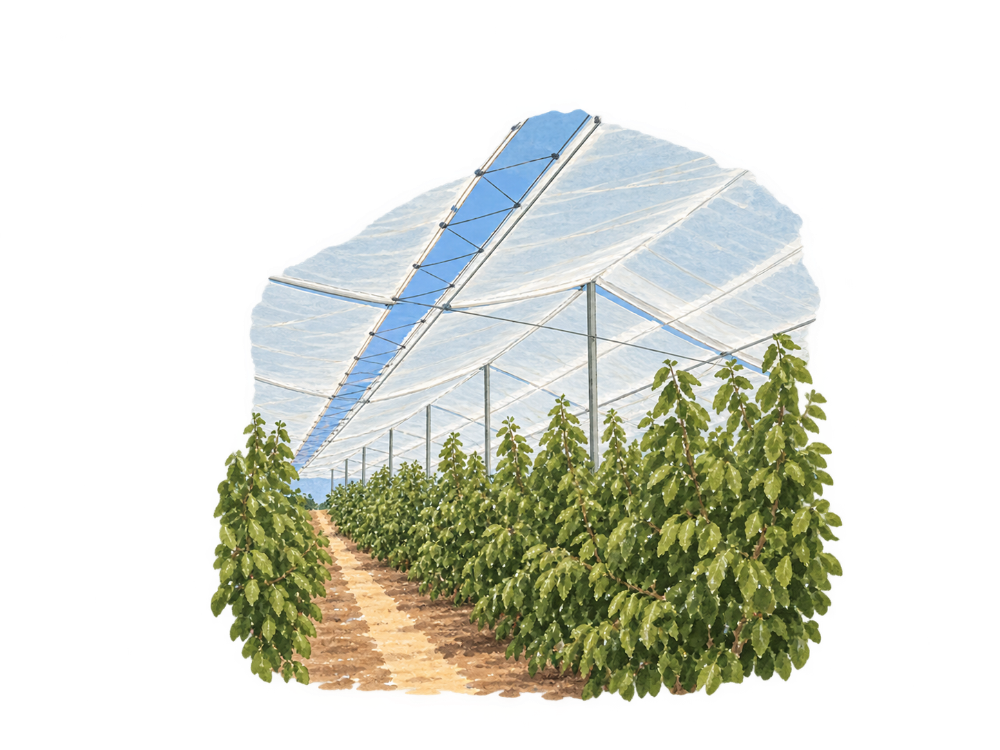
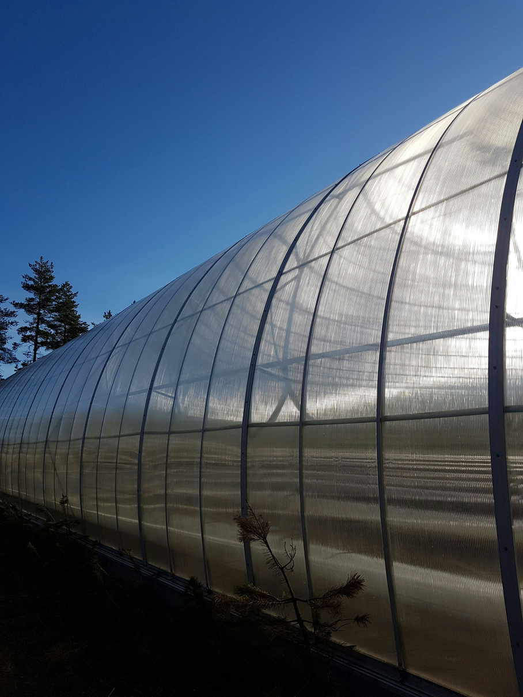
Estructuras curvas prefabricadas pensadas para instalaciones rápidas y económicas, desde pequeñas superficies hasta explotaciones tecnificadas de gran tamaño.
Solicitar presupuestoEstructura totalmente curva desde el suelo hasta la cumbrera, formada por arcos de tubo galvanizado que no precisan zapatas de hormigón, lo que facilita su traslado e instalación.
Invernadero industrial de estructura totalmente metálica y cubierta curva, con cerramiento de malla mosquitera y láminas de EVA sujetas mediante perfiles de acero galvanizado.
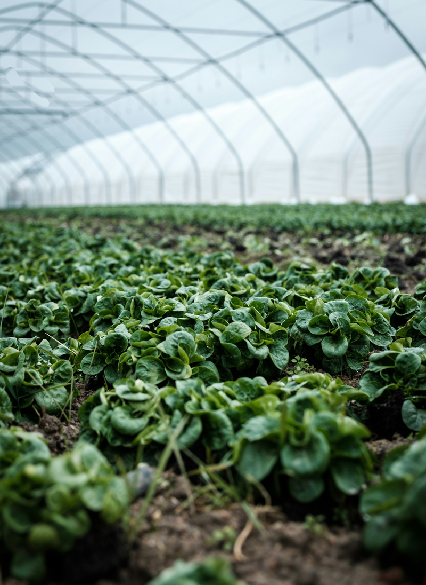
Diseñamos e instalamos sistemas de riego adaptados a cada cultivo e invernadero, integrables con la automatización del clima para un control preciso del agua y un mejor aprovechamiento de los recursos.
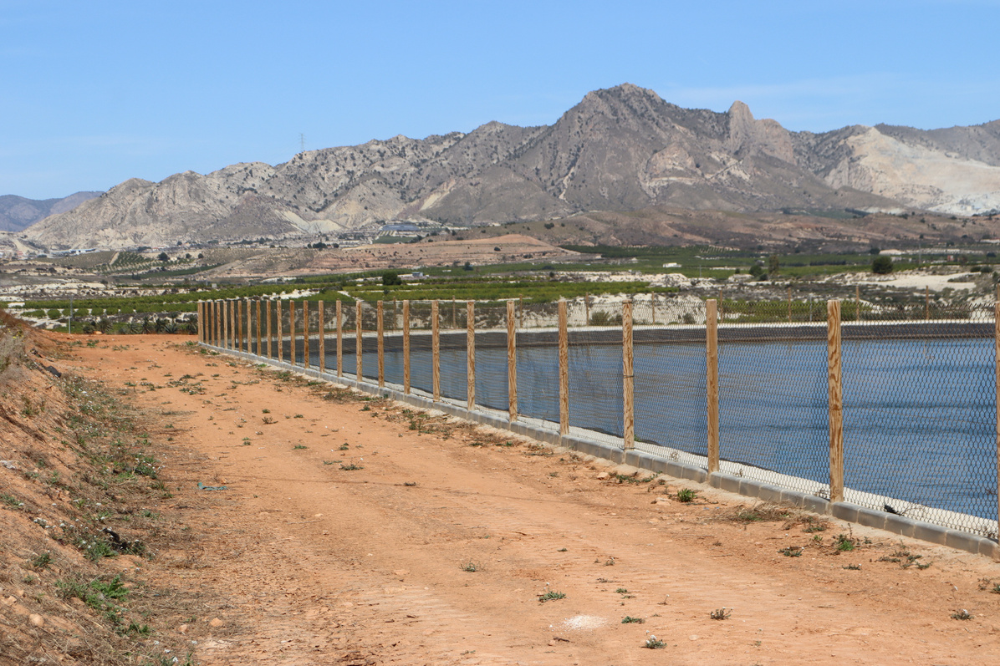
Cubrimos balsas y pantanos de riego para proteger el agua acumulada de la evaporación, la suciedad y la proliferación de algas, alargando la vida útil del agua y de toda la instalación de riego.
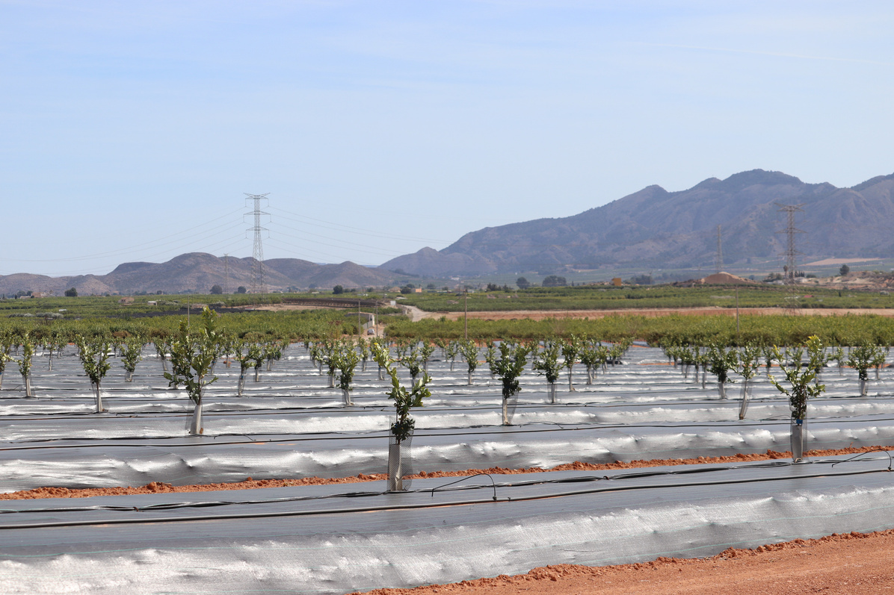
Tela cubresuelos que impide el crecimiento de malas hierbas bajo el cultivo, reduciendo el uso de herbicidas y las labores de mantenimiento. Disponible en distintos gramajes y colores según la necesidad de cada finca.
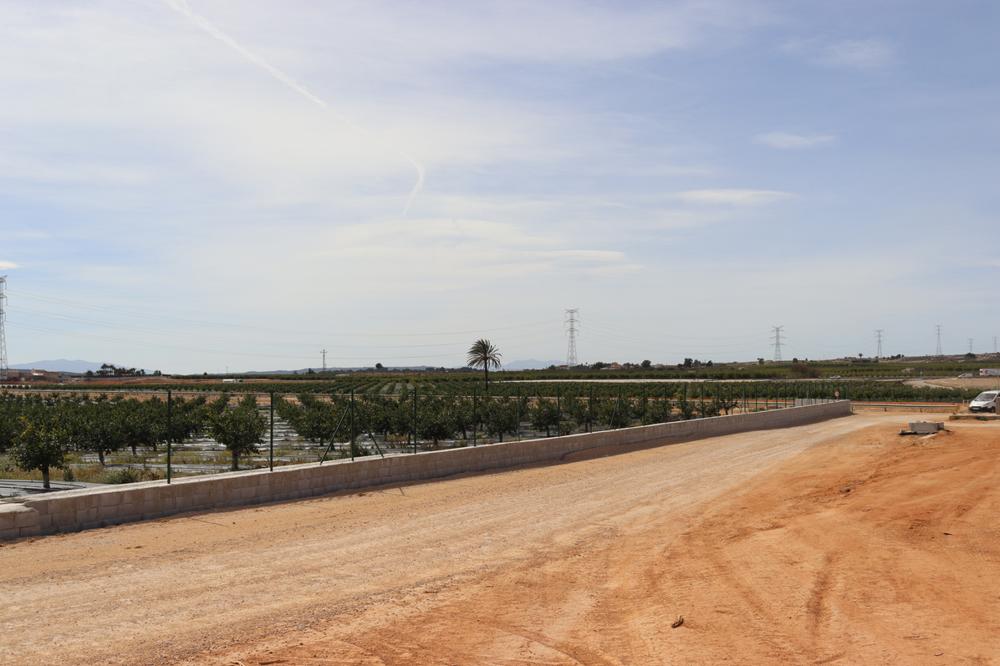
Ejecutamos cercados y vallados para delimitar y proteger tu finca: desde cercados con muro de hormigón hasta mallas simple torsión o anudada ganadera, con puertas, tensores y accesorios a medida.
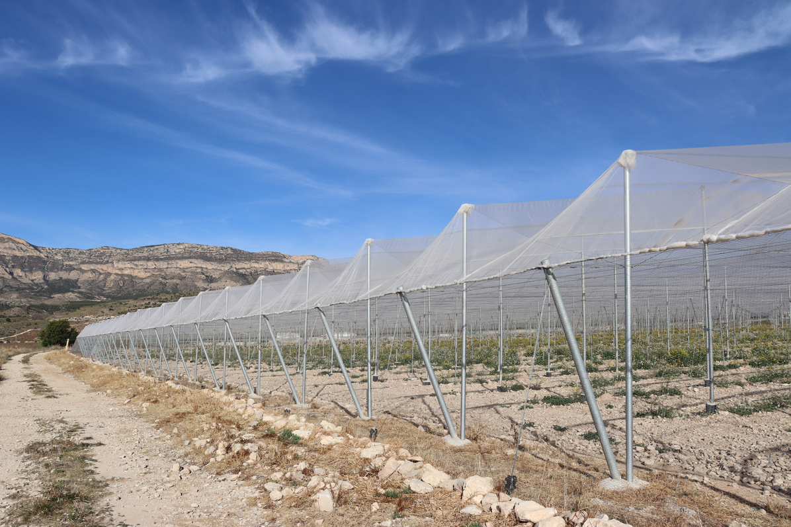
Nos encargamos de tu proyecto de principio a fin: asesoramiento técnico personalizado, maquinaria y transporte propio, y ejecución completa de la obra, para que tú solo tengas que preocuparte de tu cosecha.
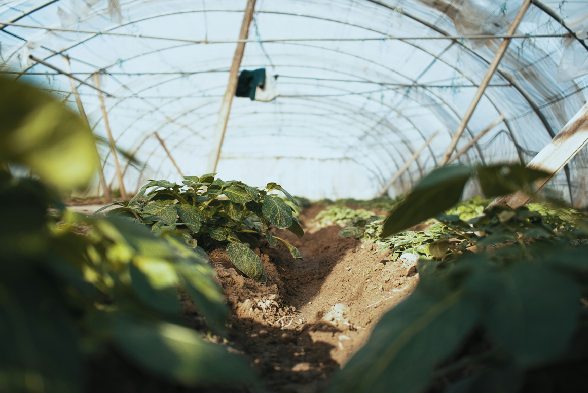
Nos encargamos del mantenimiento y desarrollo de tus plantaciones, garantizando resultados óptimos y liberándote de preocupaciones, con maquinaria innovadora y técnicas avanzadas.
Cuéntanos qué necesitas y nuestro equipo técnico te ayuda a elegir la solución más adecuada para tu finca.
Solicitar presupuesto Volver al inicio